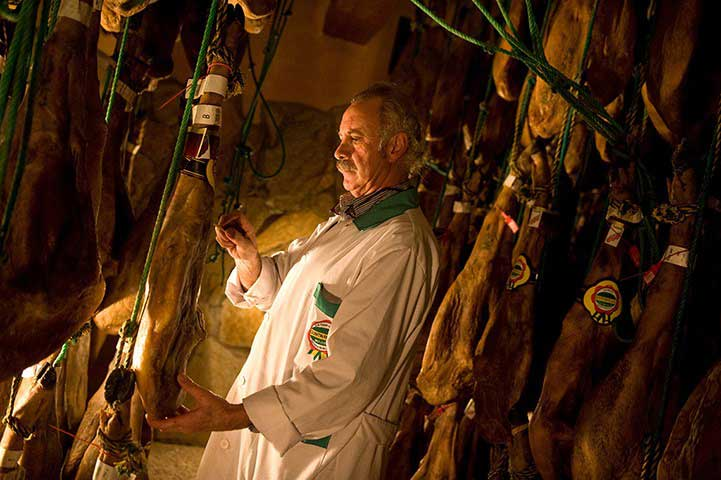
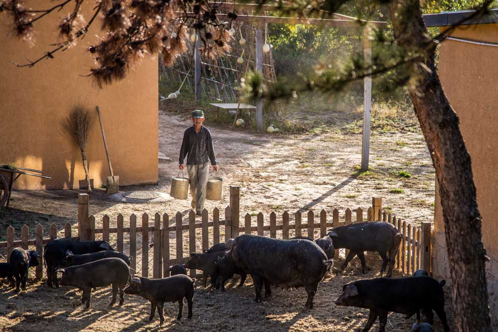
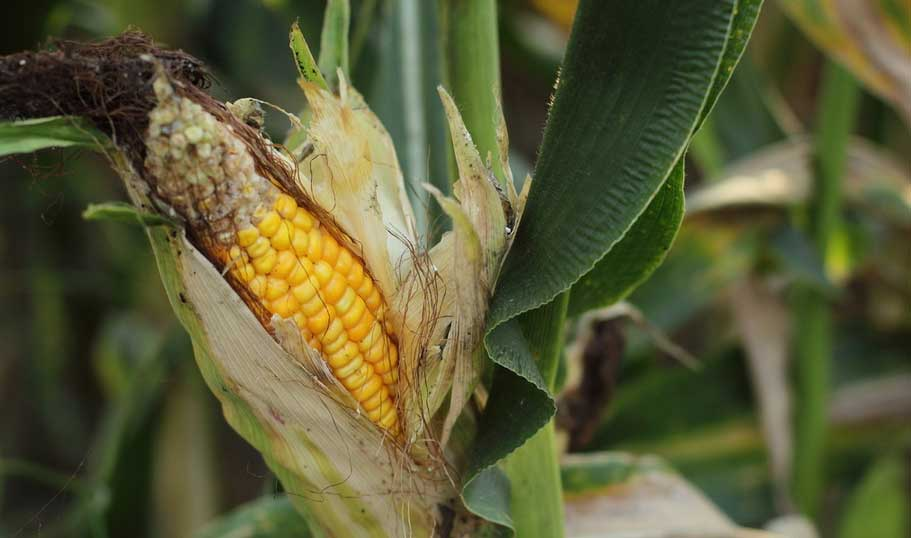
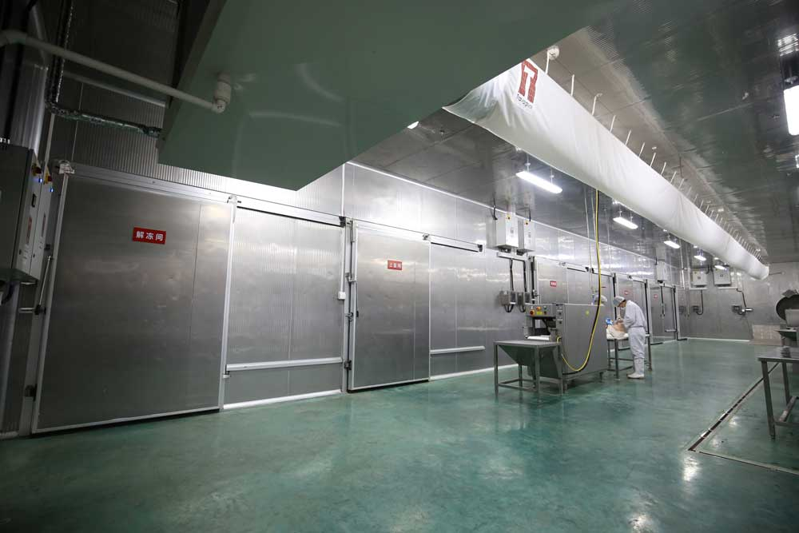

对于西班牙这个国家来说，火腿几乎已经成为生活中不可或缺的一部分。无论是高档的酒店餐馆，还是街头巷尾的休闲小店，都飘溢着火腿独有的醇香。而在品尝顶级的切片师所片的火腿后，才会真正明白这个国度为何对那散布着曼妙的大理石纹路的火腿片如此痴狂，这是上帝赠与他们的美妙礼物。
西班牙火腿从原材料上可分为塞拉诺火腿（Jamón serrano）和伊比利亚火腿（Jamón ibérico）两类。塞拉诺火腿是由常见的白蹄猪制成，在市场上和餐厅中比较常见；伊比利亚火腿是用产量稀少的伊比利亚黑蹄猪制成，并且制作更讲究，当然价格也更贵。
西班牙火腿的制作说起来不算复杂，就是将生猪腿在低温下以海盐腌制，然后送往储藏窖经过脱水、风干后成熟。听着方法似乎简单，但制作时间绝非一日之功。一条火腿成熟至少需要窖藏１０个月时间，而西班牙最顶级的伊比利亚火腿则需要数年的时间，发酵时间越长，风味就越浓厚。
西班牙火腿世界闻名，制作历史已有一千多年，是西班牙最具代表性的美食之一，而西班牙火腿中的顶级品种非伊比利亚火腿莫属。2015年，天福号开启全新旅程，采用伊比利亚火腿生产工艺，做一条更符合中国人的口味、中西合璧的火腿。
天福号农庄，这个传承自中华老字号“天福号”的子品牌，继承了天福号对食物一贯的热忱，在时光里慢慢摸索，虽然成立的时间不久，但却希冀用自己独特的手艺来感动四方食客，在慢慢等待中，发酵出令人惊艳的食物。
一根好的火腿，方方面面都马虎不得。
散养黑猪便是火腿的原料，其生长期长、适应性强、抗应激性好。肉质细腻，肉味鲜美，富含多种氨基酸，更具营养价值。
有机玉米、有机大豆及天然松针、松果，紫花苜蓿、养心草、金银花、枸杞子，这些既是农庄的风景，也是黑猪们的饲料。
为了支撑火腿的发酵制作，天福号农庄更从意大利引进了高端生产线和可远程操作的自动化温湿度控制系统，建立了专业的火腿制作车间，确保火腿发酵的品质。

活动详情：
1.尝鲜盒获奖用户：用户填写姓名、地址、联系电话，天福号农庄将在收到获奖用户信息后的3个工作日内寄出奖品，请务必填写准确。
2.代金券获奖用户：用户填写手机号，将会收到代金券相关短信，请注意及时查收，代金券可在各大门店使用。
3.用户可多次分享，赢取抽奖机会。
4.每位用户仅可获得一次中奖机会，不重复中奖。